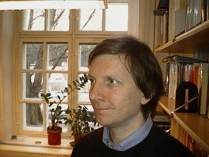
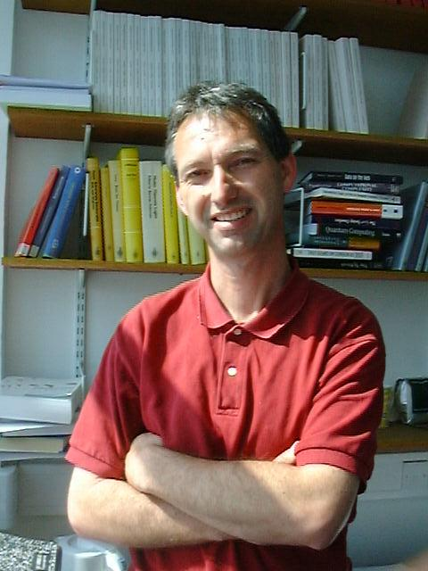
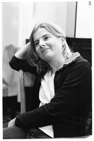

Call of Participation and
Contributed Talks
In 1908 the British Philosopher and Mathematician Bertrand Russell, who was born and died in Wales, published the article "Mathematical Logic as based on the Theory of Types" which contained a first matured exposition of Type Theory. In the same year, Ernst Zermelo's "Untersuchungen ueber die Grundlagen der Mengenlehre I" introduced the basis of current axiomatic set theory as an alternative approach to the foundations of Mathematics. A central theme of Proof Theory is to compare these different foundations. Proof Theory uses as its main tool ordinal notation systems, the basis of which was laid by Oswald Veblen in his paper "Continuous Increasing Functions of Finite and Transfinite Ordinals", again in 1908.
A century later, Proof Theory and Type Theory are flourishing more than ever before, and their manifold interconnections are driving important developments in Mathematics and Computer Science.
At this workshop we meet and discuss cutting edge research at the interface of Proof Theory and Type Theory.
Topics of interest include, but are not limited to:
- Proof Theory of Type Theory
- Relationship between Type Theory and Set Theory
- Program extraction from proofs
- Normalisation and Cut-elimination
- New approaches to ordinal analysis
- Universes and reflection principles
- Equality in Type Theory
- Philosophical and historical aspects of Proof Theory and Type Theory

Invited Speakers and Talks
 |
|

|
|
 |
Programme and Organising
Committee
| Anton Setzer (Chair) |  |
| Ulrich Berger |  |
| Monika Seisenberger |  |